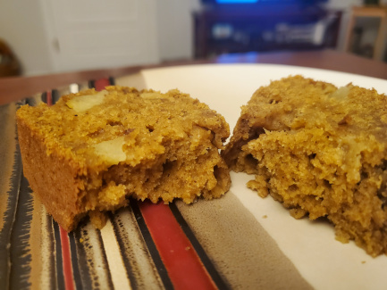

Apple Pumpkin Bread

Description
This apple pumpkin bread is so moist and delicious, it
makes for one of the absolute best fall-time desserts. Try
it with some vanilla ice cream if you're feeling extra
indulgent!
Ingredients
- 2 cups all-purpose flour
- 1 tsp. baking soda
- 1/2 cup butter (melted)
- 3/4 cup brown sugar, packed
- 2 eggs
- 1 15 oz. can pumpkin puree
- 3/4 cup applesauce (plain unsweetened)
- 1 tsp. pumpkin spice
- 1/2 tsp cinnamon
- 2 apples, peeled and chopped into half inch pieces
Directions
-
Preheat oven to 350° and grease two 8x10 bread pans.
-
Peel and chop apples. Set aside.
-
In a large bowl combine flour, baking soda, and salt.
-
In a seperate large bowl, combine butter and brown sugar.
Then whisk in the eggs, pumpkin puree, and apple sauce.
Add pumpkin spice and cinnamon and stir well.
-
Make a well in the dry ingredients, and add the wet
ingredients. Mix well to combine. Then fold in chopped
apples.
-
Evenly split the mixture between the two bread pans. Bake
for 45-55 minutes, or until a toothpick inserted in the
center comes out clean.
-
Allow to cool enough to slice, and enjoy!